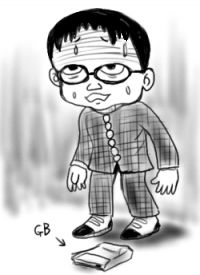

一週間ほど忙しくて更新できなかったので、書き留めてあった6/25分と一緒に7/1分も更新です。あわせてお楽しみください。
先週(6/25)放送分の『デジモンアドベンチャー02』ですけど、日曜早朝子供向けアニメでいきなりクトゥルフものはおかしいと思います。しかも前後の話と全然つながりないですし。
太古の神を信仰する海辺の部族が苦しんでいるところに主人公の一人の女子が訪れ(しかも呼び声にひかれて)、苦痛の原因であるところのイービルリングを取り除くと、部族は彼女と子をなそうとし、断られると太古の神が眠る海底へ帰っていくというストーリーはどう考えてもマズイですよ？
しかし、それでも今期最もイケてるTVアニメであるので、毎週見る。映画が気になります。
『Mr.ドリラー』購入成功！しかもGB版(伏線)！ゲームボーイColorと同時購入したんですけど、今さらながらホントにカラーでビビったよ。時代に取り残され感。
休日ということで、埼玉某所山本七式邸まで遊びに出かけました。「対戦！対戦！」とうわ言のように繰り返す西原さんと、「冬目景！冬目景！」とうわ言のように繰り返す山本かんぽにさんも登場です。いざ勢ぞろいしてみると、山本かんぽにさんは前々日からの発熱を薬で無理矢理下げての登場で、どうやら本当にうわ言だったようです。というか大丈夫ですか！そこまでして神奈川某所からやってくる気力に腰を抜かしました。
駅から西原さんと一緒に七ちゃん邸に向かったのですが、バスの中で西原さんが「屋外でビールがうまいんすよ！屋外でビール！ビール！ビール！いつも夏はビールです。ビール！」と一方的にまくしたてまくるのでうるさいなぁと思った(失礼)。バスを降りた途端、本当にコンビニに直行して「オレはビールを飲みます。ビール！」と酒・リキュールコーナー目指して突進していくのを尻目に、単行本コーナーに目をやるとなぜかやたらチャンピオンコミックスが充実しているというおおよそコンビニらしくない本棚で、『新装版・魔太郎がくる！』まであってビビりました。
魔太郎がガールフレンドに誘われてオリエンテーリング同好会に入会したところやっぱりいじめられる日々でした。ある日ガールフレンドから電話があって「明日の休日のオリエンテーリングには行けなくなったから魔太郎くん代わりに出て」と頼まれて、集合場所に行ってみるとそこには部長だけしかいませんでした。彼はもともと彼女目当てで、二人きりで出かけるつもりだったのに代わりに魔太郎が来たもんだから機嫌も最悪です。魔太郎をビシバシとしごきながら帰らずの森の深部まで進み、コンパスを持たない魔太郎をおきざりにして一人で帰ろうとします。魔太郎は「コノウラミハラサデオクベキカ」といつもの呪いで部長のコンパスを狂わせ、自分のところまで呼び戻します。オチは、魔太郎が家で御飯を食べていると、森の深部で白髪化して痩せこけた高校生が発見された、というニュースがTVで放映され、それを見たママさんが「この人、魔太郎と一緒にハイキングに出かけた人よね」と言っておしまいというものでした。相変わらずのA節ですが、入部のあたりでやたら詳細なオリエンテーリングのルールが図入りで解説しているなど、果たしてAはオリエンテーリングが好きなのか嫌いなのか不明です。
夢中になって読んでると、起きたばっかりの山本七式(通称:七ちゃん)登場。起きたばっかりなのに西原さんにビールを買わされてました。
山本かんぽにさんを待つ間、七ちゃんマンション横のこじんまりとした公園でバネ付きライドにまたがりながらビールを飲んでドリラーがどうとか、ケロロ軍曹2巻がどうとかだべっていたところ(主にケロロ軍曹のセリフの暗記披露)、僕のゲームボーイColorが液晶面を下にして落下(伏線回収)！いきなり傷物に！
*)イメージ画像山本かんぽにさんが現れたので七ちゃん邸に移動。西原さんがかかえてきたドリキャスで対戦！対戦！みんなで対戦！僕はその横でホリ・ススム！(対戦できないから)など会話ない感じで現代っ子ぶりを満喫。
腹が減ったので近くのイタ飯屋に移動。店内に入った途端、たまの休日揃って外食を、という感じの家族がテーブルを囲んでいるのが目に入るも、息子は携帯メールに夢中で両親の話には目もくれず、いきなりの家庭空中分解ぶりを目の当たりにして憂鬱に。
料理はなかなかの美味で、特にトマトとモッツァレラチーズのサラダが大層うまかったのですが、後ろに位置したさっきの家族テーブルが、父親の説教独壇場と化していてやっぱり憂鬱になりました。あと、隣のテーブルのカップルの男の方が、やたらデッカい声で店員を呼び、店員がテーブルにたどり着く前に注文をするのを見て、女性の方がびびってたあたりがおもしろかったです。
おわり。
教訓：まわりばかり気にかけずに、友達と話そうね。